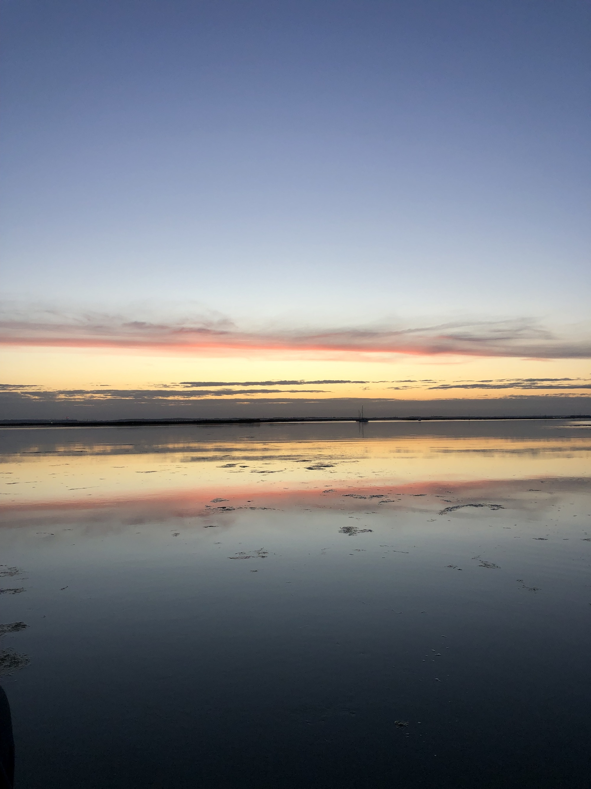
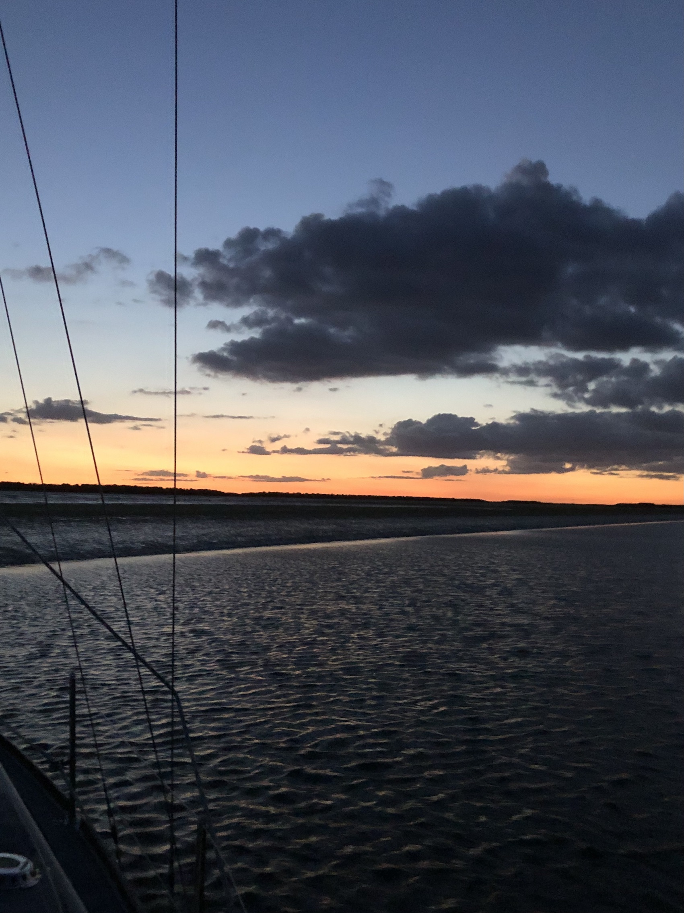

A night at anchor.

Good here. Turquoise water, trade wind clouds in blue sky, low summer evening sun and the sound of 20 knots of wind blowing across the water. I'm in the shelter of a mud bank so it seems strangely calm. Oyster catchers chat bossily and there are unidentified small birds on the mud but not much else - yet. Snow Goose (nearly) literally flew down this afternoon with a strong wind behind us. I’m practicing sailing on the tiller pilot and I can see why people get hooked. It’s definitely easier to deal with sail lowering, anchoring etc and annoyingly it sails a straighter course than I can. I will certainly do more. On the way down a seal watched me pass showing of too large nostrils, maybe smelling human?
Unusually for Snow Goose I have anchored two thirds of the way down the main creek to be as far as possible out of the 20knot westerly wind. I may be too close to the bank - currently in a depth of 4.7m which should drop to about 3m which could be fine as long as the wind doesn't change. We'll see. As the tide goes down the shiny mudbank creeps closer or Snow Goose does to it and the space that the boat occupies seems to get less and less. 4.2m depth now. That still should be enough and I like being this close to the land. Quite apart from the shelter it offers I hope it will bring wading birds nearer. So far it’s all gulls and oyster catchers. Aha, an avocet has just arrived swishing its beak back and forth in a crazy way. Scale on the water is always surprising, deceptive and full of contrasts between things nearby and other things which seem a great distance off. Something to do with the mostly horizontal space perhaps. The shiny mud bank is actually more green than brown, covered in a thin layer of some plant life. This is probably where all the tiny creatures live which the birds like so much. More avocets are arriving, about twenty in a talkative flock. And a curlew, or something like it. And now a marsh harrier works along the opposite shore. A heron. And now big flocks of egrets and avocets. Amazing to see so many birds here. And finally to cap the evening off a huge yellow rising moon, climbs out of the horizon clouds.
The next morning
A windy night, 20kn plus in the creek. It only felt significantly strong at high water when there was no shelter left. In fact when I got up at 0200 to check everything and try to quell the symphony of halyard sounds in the full moonlight the land had all but disappeared under the spring tide high. Somewhat disorienting especially when you are a bit sleepy. Anyway the anchor held snugly in the mud and we didn’t ground despite being so close to the bank, with the wind remaining in the west all night. A pleasant breakfast on board in the sunshine and off to sail up the Medway at 1000. Raising the anchor (weighing?) went smoothly and is fine for me to do without a windlass even if the last tug to get it off the mud means extra effort. With a tidal range of easily 5m my full scope of 25m chain in as much as 8m depth is a bit short but it seemed to hold fine. I wrongly thought the wind had dropped so set off with a full mainsail up - a mistake. As usual it makes for exciting sailing but is slower than reefed due to the heeling and weather helm and although I had the genoa reefed it was still too much. Tacking in these conditions, single handed with wind over tide chop and a gusty wind, is tough and caused me to stop sailing and motor sail earlier than I would have liked. But the boat is comfortable motoring. Note to self, must replace the engine mounts this winter. Managing the lock and manoeuvring to my berth is frankly easier on my own, probably because I’m concentrating harder.
A good 24 hours made special by the evening in Stangate Creek with so much wildlife.
